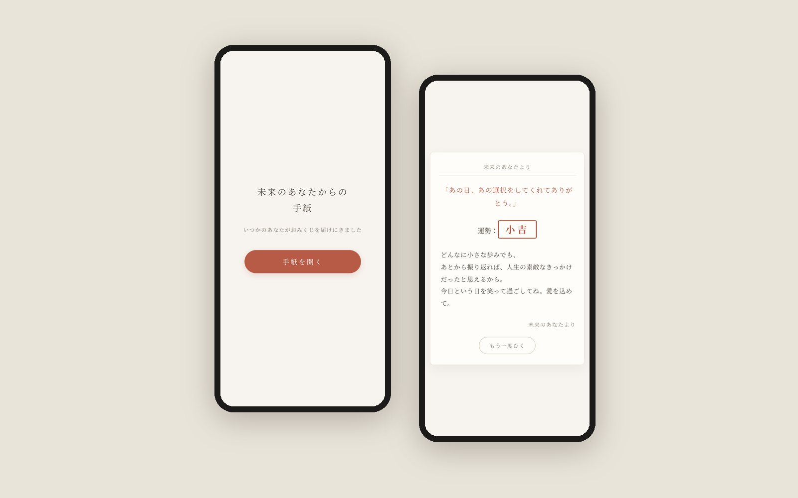
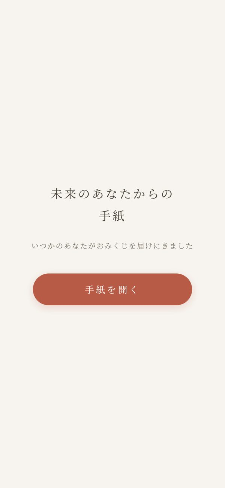
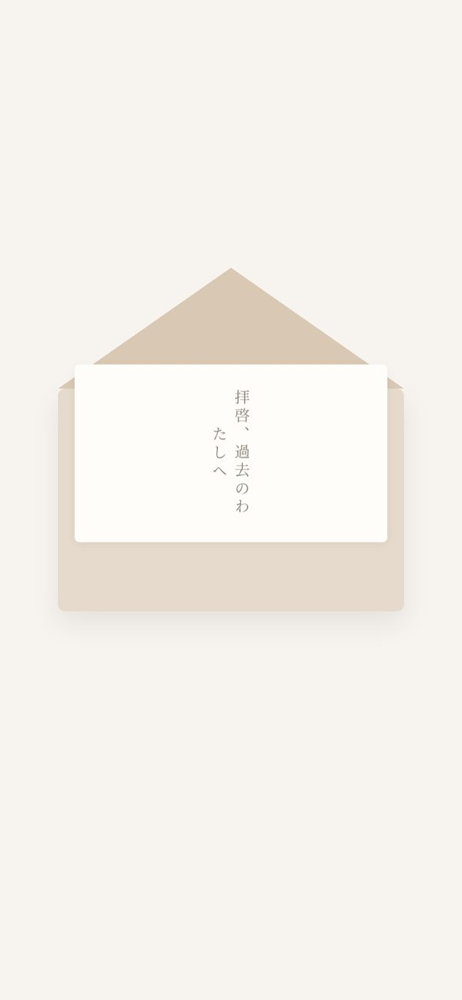
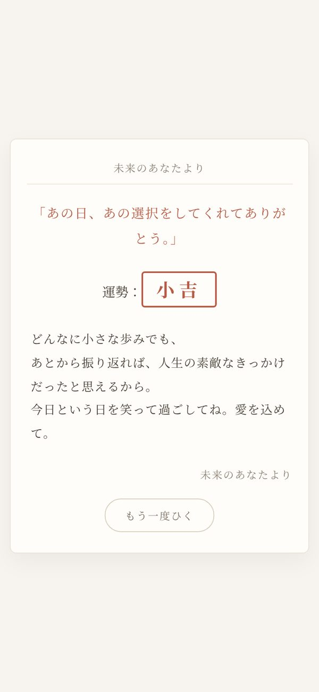

おみくじアプリ／授業課題
未来のあなたからの手紙
人生に悩んでいる人の背中を、少しだけ押すおみくじです。運勢だけでなく、未来の自分から届いた手紙として、前向きな言葉を受け取れるようにしました。
- 制作
- 授業課題（1人）
- 期間
- 1日
- 担当
- 企画・内容の考案／実装はAI（Gemini）
- ツール
- Gemini

目的とターゲット
ターゲット：人生に悩んでいる人。
コンセプト：ちょっとだけ元気が出る、背中を押せるようなおみくじ。
工夫したこと
ただのおみくじではなく、何か差別化したいと考えました。そこで、誰かからではなく、あくまでも「未来の自分」からの手紙という設定にしました。
- 封筒が開いて、縦書きの「拝啓、過去のわたしへ」が見えてから手紙が表示される
- 手紙は「あの日、あの選択をしてくれてありがとう。」から始まり、未来の自分からの前向きな言葉が届く
- 運勢は大吉・中吉・吉・小吉の4種類。背中を押すおみくじなので凶は入れず、大吉がいちばん出やすい（30%）
- メッセージは「書き出し」「中身」「締め」の3つの文を組み合わせて、1000通り



掲載前の見直し
ポートフォリオに載せる前に、AIと一緒にコードを点検しました。メッセージを「365パターン」作る仕組みが、実際には10種類ある書き出しのうち4種類しか使っていなかったため、3つの文をそれぞれランダムに選ぶ形に直しました。
自分で使い直したときに、「凶」が出ると背中を押すどころか落ち込ませてしまうと感じました。そこで凶と大凶をなくし、大吉が多めに出るように変えました。
学んだこと
「人からではなく、自分からの手紙」という設定にしたことで、ありふれたおみくじと差別化できました。何を作るかだけでなく、どんな設定で届けるかで、受け取り方が変わることを学びました。